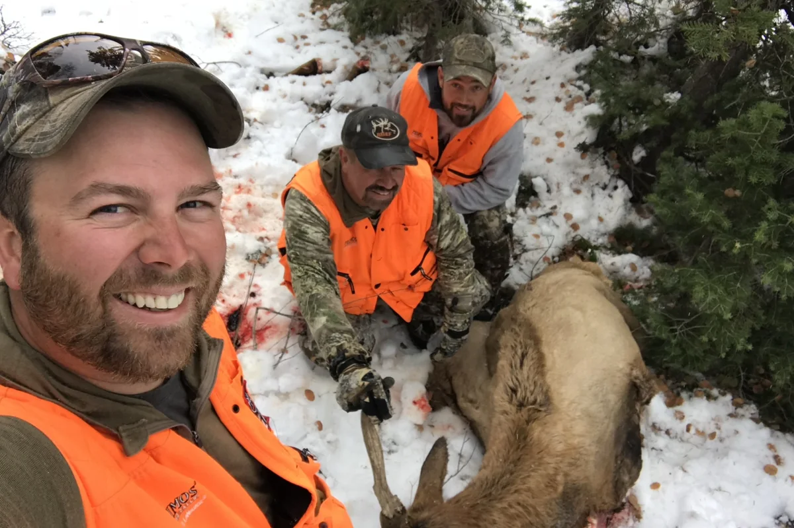
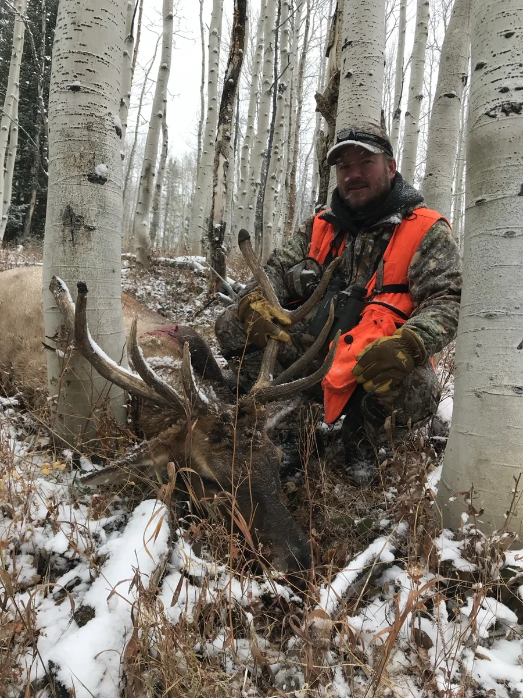
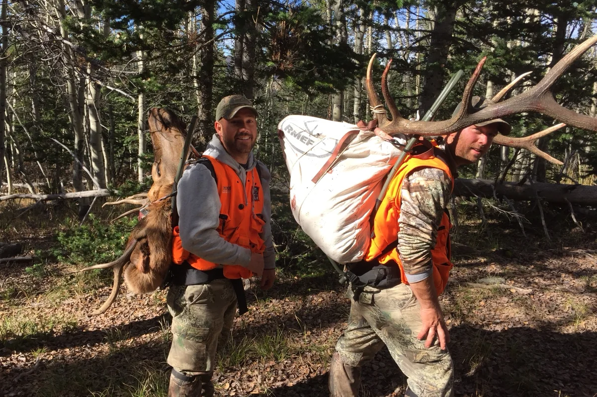
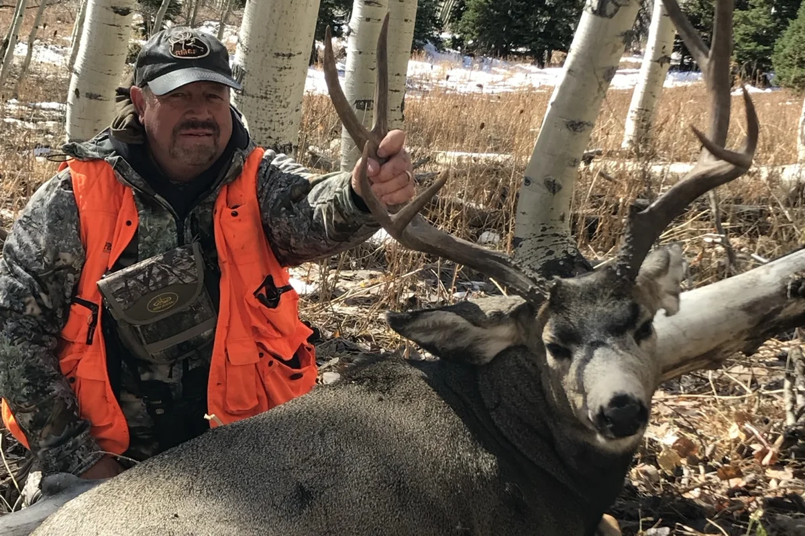
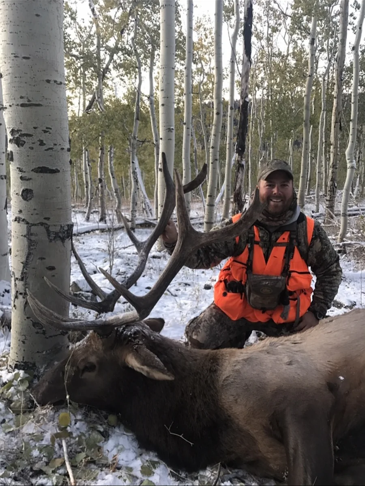
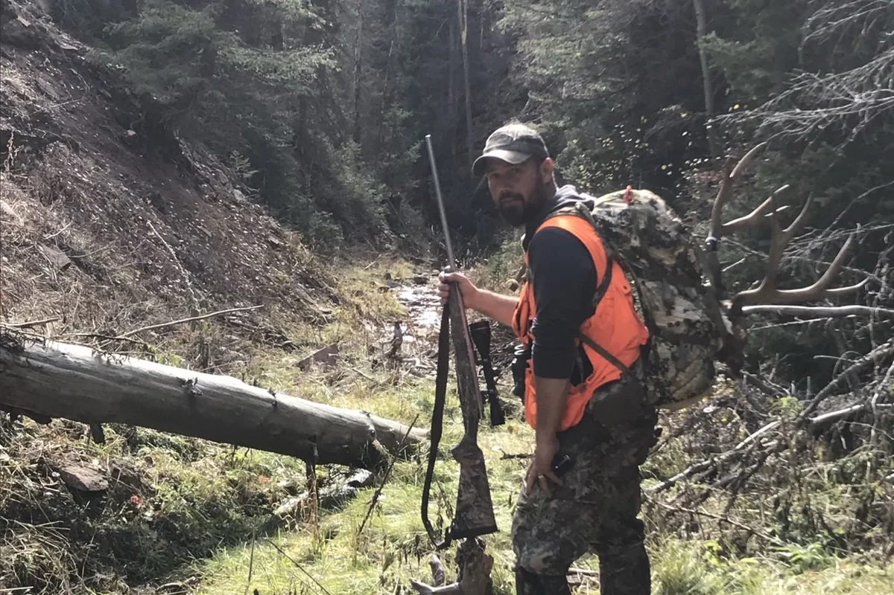

September Elk
TACTICS
September Elk Tactics: Hunt the Phase
Change your approach as herd behavior changes.
Read guide →Elk Hunting Hub
Our flagship section covers finding elk, September tactics, backcountry gear, camp systems, and hunting pressured country.
Gear Guide
Fit, frame design, capacity, and meat-hauling ability explained without the marketing noise.
Read Pack GuideField Guides
Change your approach as herd behavior changes.
Read guide →A practical system for day hunts and backcountry camps.
Read checklist →How to adjust when pressure changes elk movement.
Read guide →More From the Field




New Field Guide
Distance, terrain, meat care, and load management are part of the hunt plan.
Read guide →Build a practical system without carrying half the garage.
Read checklist →Western Big Game

Use terrain, shade, feed, and patience to turn more country into fewer wasted miles.
Read guide →
Wind, cover, patience, and setup discipline matter more than aggressive calling.
Read guide →
Distance, heat, darkness, and load management belong in the hunt plan.
Read guide →